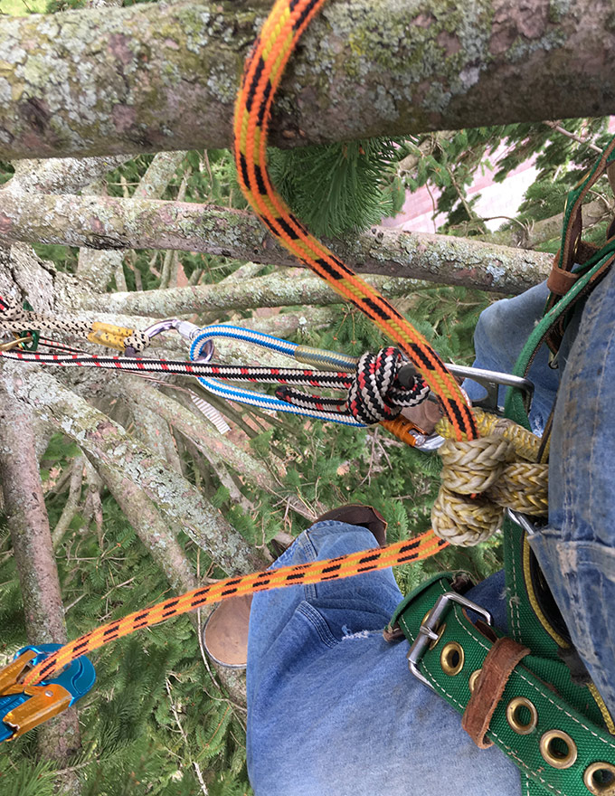

This website exists for no real purpose other than to show off my skills at web development... such as they are. I could have used one of those cookie-cutter template-based buld-your-own-website apps that's out there but, no... not me. I'm old school. I built this site with my bare hands.
I decided to make this an ASPX web app because it would serve my immediate concerns as well as allow for any further expansion. In addition to that, it seemed appropriate from a professional standpoint because I have worked for many years in the Microsoft .NET environment. It is, of course, an absurd amount of overkill to throw an ASPX web app at a "Hello World" page but, at least I didn't make it MVC.
OK, It is MVC, soo.. I was wrong about that.
It is not a traditional web form app with postbacks but, rather, uses AJAX, JavaScript and jQuery to accomplish most of the functions such as loading page content, setting banner and menu options on each page and a design objective based on a mobile-first approach that is developed primarily for very small screens and adapts as the app is viewed on larger screens.
Try re-sizing your browser window to see what the pages look like at different sizes.
The photography, video, audio and design work are all my original work.

Most of the photography on this site is mine. Anyone who says otherwise is a dirty, rotten liar.
The 'experience' section of the site has a number of images that aren't mine but, pretty much all photos everywhere else in the rest of the site are my work.
I have produced a few recordings. Some of my friends helped me out by laying down tracks for me to mix. There are some pretty good songs here. As a recording engineer, I wish I had gooder equipment and a big, fancy studio to record in but, I wouldn't have time to use it anyway.
For some reason I have always liked climbing trees.  I enjoy the view I guess. Most of the times when you climb a tree you are the first person to ever enjoy that particular view. Some folks enjoy wingsuit flying and base-jumping. I'm into real danger--I climb trees. I am very well-trained as a climber and always practice industry-approved safety procedures. Climbing is fun. Falling... not so much.